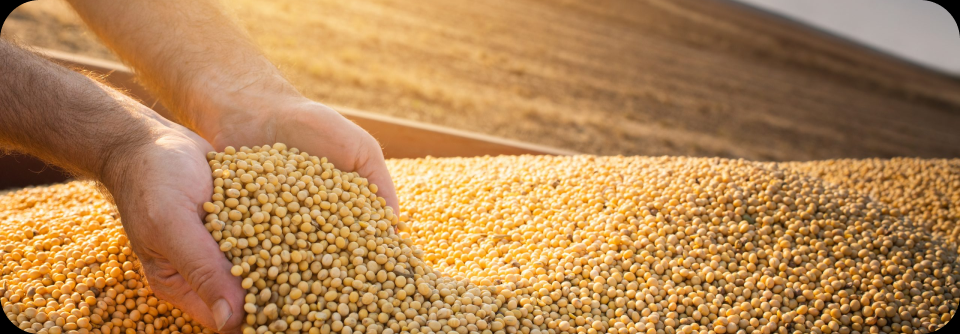
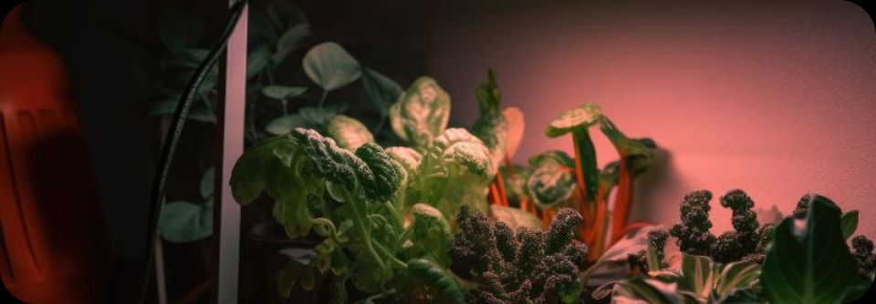
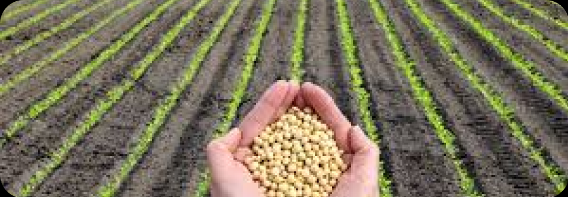

Sobre Nós
Agricultores tem como perda e/ou disperdicio de aproximadamente 20% de sua produção
e 4% são relacionados com a má iluminação, onde afetam os grãos e os causam o
do crescimento saudável.
A Eclipseed tem como principal objetivo potencializar e melhorar as plantações
de soja da sua empresa para proporcionar maior quantidade de produção e redução
na perda de grãos por problemas relacionados a luminosidade.